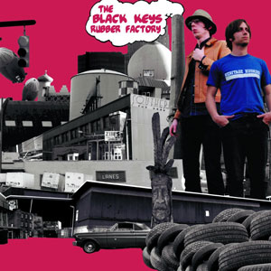

Members
Dan Auerbach
Dan Auerbach, born May 14, 1979 in Akron, Ohio, is the vocalist and guitarist for The Black Keys. Influenced early-on by his mother's side of the family, notably by his uncle who played bluegrass music; He became facinated with the blues during his childhood. In highschool Dan was a normal teenager who captained the soccor team at Firestone High School. He attended McGill University in Montreal where he became heavily influenced by Junior Kimbrough and eventually dropped out to persue guitar more seriously.
Patrick Carney
Patrick Carney, born April 15, 1980 Akron, Ohio, is the drummer for The Black Keys. Patrick learned how to play the drums on a $150 drumset that he bought with money he earned from a job washing dishes. He never took lessons and simply learned by mimicking his friends that were also drummers.
Dan Auerbach and Patrick Carney lived in the same neighborhood where thry grew up playing tag and football together. In 1996, the two began jamming together after being encouraged by their brothers. In 2001 they formed The Black Keys releasing their first album "The Big Come Up" in 2002.
Albums
Close
Turn Blue (2014)
- Weight of Love
- In Time
- Turn Blue
- Fever
- Year in Review
- Bullet in the Brain
- It's Up to You Now
- Waiting on Words
- 10 Lovers
- In Our Prime
- Gotta Get Away
Close
El Camino (2011)
- Lonely Boy
- Dead And Gone
- Gold On The Ceiling
- Little Black Submarines
- Money Maker
- Run Right Back
- Sister
- Hell Of A Season
- Stop Stop
- Nova Baby
- Mind Eraser
Close
Brothers (2010)
- Everlasting Light
- Next Girl
- Tighten Up
- Howlin' For You
- She's Long Gone
- Black Mud
- The Only One
- Too Afraid To Love You
- Ten Cent Pistol
- Sinster Kid
- The Go Getter
- I'm Not The One
- Unknown Brother
- Never Gonna Give You Up
- These Days
Close
Attack & Release (2008)
- All You Ever Wanted
- I Got Mine
- Strange Times
- Psychotic Girl
- Lies
- Remember When (Side A)
- Remember When (Side B)
- Same Old Thing
- So He Won't Break
- Oceans & Streams
- Thing Ain't Like They Used To Be
Close
Magic Potion (2006)
- Just Got To Be
- Your Touch
- You're The One
- Just A Little Heat
- Give Your Heart Away
- Strange Desire
- Modern Times
- The Flame
- Goodbye Babylon
- Black Door
- Elevator
Close
Chulahoma (2006)
- Keep Your Hands off Her
- Have Mercy on Me
- Work Me
- Meet Me in the City
- Nobody but You
- My Mind is Ramblin
- Junior's Widow
Chulahoma is a tribute to Junior Kimbrough, who was a great influence to Dan Auerbach. the album includes a letter from Auerbach in which he describes his first encounter with Kimbrough's music and how it inspired him to be a musician. The title of the album is a reference to Chulahoma, Mississippi, the location of "Junior's Place", a juke joint bought in 1992 by Kimbrough and operated after his death by his son until it burned down on April 6. 2000.
Close
Rubber Factory (2004)
- When The Lights Go Out
- 10 A.M. Automatic
- Just Couldn't Tie Me Down
- All Hands Against His Own
- The Desperate Man
- Girl Is On My Mind
- The Lengths
- Grown So Ugly
- Stack Shot Billy
- Act Nice and Gentle
- Aeroplane Blues
- Keep Me
- Till I Get My Way
Close
Thickfreakness (2003)
- Thickfreakness
- Hard Row
- Set You Free
- Midnight in Her Eyes
- Have Love Will Travel
- Hurt Like Mine
- Everywhere I Go
- No Trust
- If You See Me
- Hold Me In Your Arms
- I Cry Alone
Close
The Big Come Up (2002)
- Busted
- Do The Rump
- I'll Be Your Man
- Countdown
- Breaks
- Run Me Down
- Leavin' Trunk
- Heavy Soul
- She Said, She Said
- Them Eyes
- Yearin'
- Brooklyn Bound
- 240 Years Before Your Time